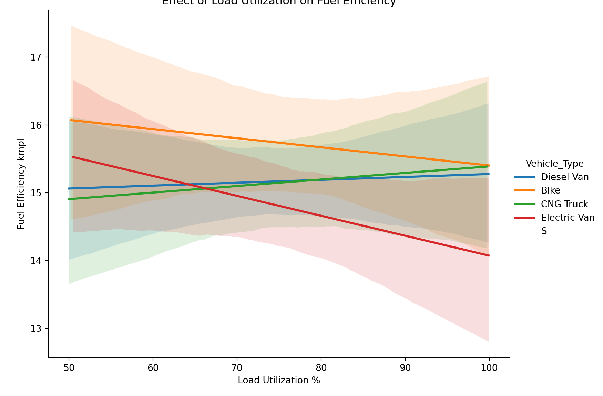

This fictional delivery company uses a range of vehicles, routes, and delivery types, they need to figure out how to improve their fuel efficiency without out impacting their revenue.
This data was sourced from Kaggle and uses the following tools: - Python - Pandas - Matplotlib - Seaborn
I started by importing and exploring the data, checking for completeness and standardisation.
import pandas as pd
import seaborn as sns
import matplotlib.pyplot as plt
data_import = pd.read_excel(r"C:\Users\Matthew.Webb12\Desktop\GitHub Repos\Portfolio\python data\carbon_emissions_fleet_dataset.xlsx")
print(data_import.head())print(data_import.columns)
# Exploring the data for completeness
columns_to_check = ["Vehicle_Type", "Route_Type", "Delivery_Type"]
# Create empty dictionary for the tables to be stored in
count_tables = {}
for col in columns_to_check:
count_tables[col] = data_import[col].value_counts().to_frame(name="Count")
## Count
## Vehicle_Type
## Diesel Van 525
## Electric Van 403
## CNG Truck 310
## Bike 261
## S 1## Count
## Route_Type
## Urban 592
## Suburban 463
## Rural 305
## Highway 140## Count
## Delivery_Type
## Standard 749
## Express 459
## Same-day 292Before I start comparing the delivery and vehicle types for fuel efficiency I want to check how load utilization effects fuel efficiency, as ultimately maximizing fuel efficiency is what we are aiming to achieve here. We can see that for Electric vehicles and Bikes the fuel efficiency decreases steadily as the load utilization increases, whereas for CNG Trucks and Diesel Vans it increases. This is key information that will factor into my conclusion.

Here I can see the break down of the key columns I will be using for my calculations, my next step is to handle the data and create an average fuel efficiency per vehicle and delivery type, and see how this compares to the averages of the type combinations.
# Handling columns
data_import["CO2_Emissions_kg"] = (data_import["CO2_Emissions_g"] / 1000).round(2)
data_import = data_import[data_import["Vehicle_Type"] != "S"]
# Creating an average fuel efficiency per litre for each vehicle type
average_tables = {}
for col in columns_to_check:
average_tables[col] = data_import.groupby(col)["Fuel_Efficiency_kmpl"].mean().to_frame(name="Average")## Average
## Vehicle_Type
## Bike 15.732069
## CNG Truck 15.134452
## Diesel Van 15.172057
## Electric Van 14.837692## Average
## Route_Type
## Highway 15.511071
## Rural 15.255016
## Suburban 15.411147
## Urban 14.862145## Average
## Delivery_Type
## Express 15.223813
## Same-day 14.928797
## Standard 15.234526I created a function that calculated the averages for each combination of delivery and vehicle types for the other key metrics in the data.
# Creating function
def matrix_function(value_column):
return data_import.pivot_table(
index="Vehicle_Type",
columns="Delivery_Type",
values=value_column,
aggfunc="mean"
).round(2).T
on_time_matrix = matrix_function("On_Time_Delivery")
co2_matrix = matrix_function("CO2_Emissions_kg")
fuel_matrix = matrix_function("Fuel_Efficiency_kmpl")
# Step 2: Now combining them into one for ease of reading
combined_matrix = pd.concat(
[on_time_matrix, co2_matrix, fuel_matrix],
axis=0,
keys=["On_Time", "CO2_kg", "Fuel_kmpl"]
)
combined_matrix.index = combined_matrix.index.map('_'.join)
combined_matrix## Vehicle_Type Bike CNG Truck Diesel Van Electric Van
## On_Time_Express 0.89 0.87 0.89 0.92
## On_Time_Same-day 0.95 0.92 0.93 0.90
## On_Time_Standard 0.93 0.92 0.94 0.90
## CO2_kg_Express 2.72 11.86 18.77 4.07
## CO2_kg_Same-day 2.00 11.93 20.89 3.70
## CO2_kg_Standard 2.41 12.39 18.12 4.08
## Fuel_kmpl_Express 15.17 14.94 15.44 15.18
## Fuel_kmpl_Same-day 16.07 14.67 14.86 14.57
## Fuel_kmpl_Standard 15.97 15.42 15.15 14.70Now we can clearly see how the averages of the combinations stack up against the average for the whole variable, this shows us which combinations are preforming below average and could do with reorganising.